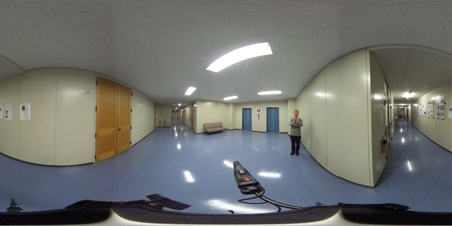

Theta Viewerのページへようこそ
Theta Viewerは、RICOH THETAのような正距円筒図法(equirectangular projection)のパノラマ画像のHTML5ビューアーです。
Theta Viewerは、jQueryのプラグインになっていて、必要なライブラリを読み込んだ上で、以下のようなコードを埋め込むことで、Webサイトなどに正距円筒図法のパノラマ画像を表示することができます。
<div id="embed-area"></div>
<script>
(function ($) {
'use strict';
$("#embed-area").createThetaViewer("image/panorama-image.jpg");
}(jQuery));
</script>
Theta Viewerは、JavaScriptのHTML5 3Dグラフィックスライブラリthree.jsを利用して表示を行なっています。現時点ではWebGLの動作するPCのブラウザで閲覧することができます。また、今後、iOSやAndroidでも動作するようにしたいと考えています。
Theta Viewerのデモ1
サイトにアップしたパノラマ画像を表示するデモ
Theta Viewerのデモ2
パノラマ画像を領域にドラッグ&ドロップして表示するデモ
パノラマ画像をここへドロップ